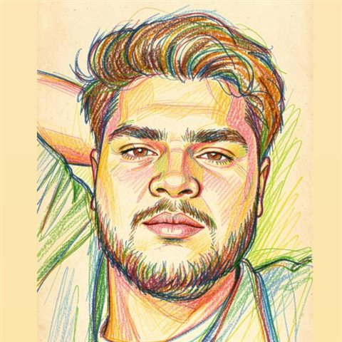

01
SCHOOL · CLASS 10
St. Joseph’s School
Habsiguda, Hyderabad
80%BOARD EXAMS
LAW STUDENT · BIG-PICTURE THINKER
Hi, I’m Chalangari Sai Prateek. I’m studying law, asking questions, and following ideas wherever they lead.

I’m a first-year BA LL.B. student at Keshav Memorial College of Law. For me, law is a way to understand people, ideas, and the systems that shape everyday life.
Outside class, I’m just as happy on a volleyball court as I am down a research rabbit hole. I like connecting dots across different subjects—and staying curious about what I might learn next.
Each chapter has given me something new to build on.
Habsiguda, Hyderabad
Habsiguda, Hyderabad
BA LL.B. · 5-year integrated course
Currently pursuing my BA LL.B. and looking forward to what comes next.
A few things I make time for, in and out of class.
Curious about an idea?